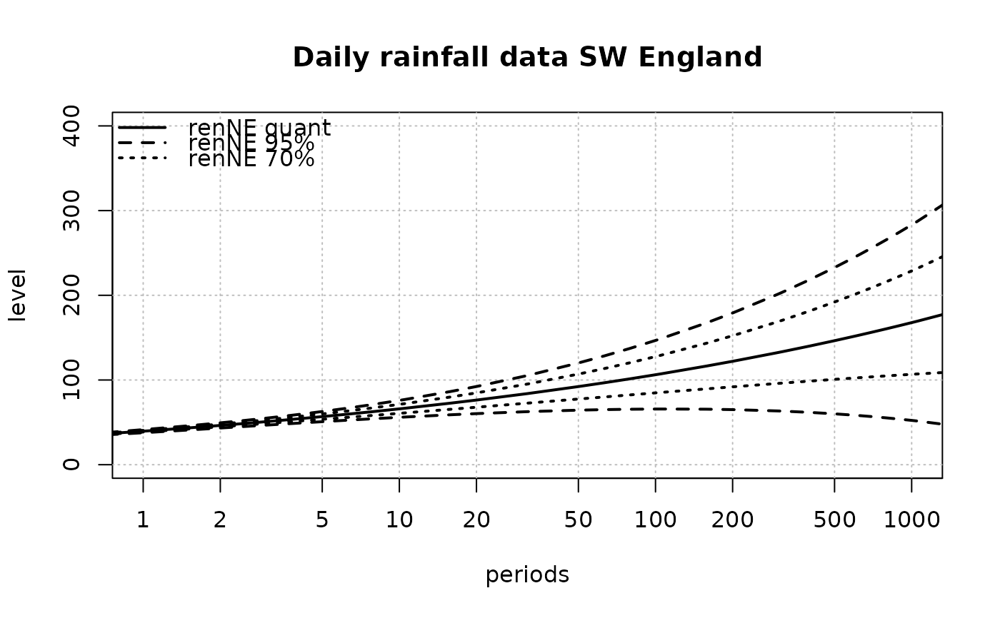

Define a 'renouvellement' model without estimation
RenouvNoEst.RdBuild a 'renouvellement' model using parameters given by the user.
Usage
RenouvNoEst(threshold,
estimate = NULL,
distname.y = "exponential",
fixed.par.y = NULL,
trans.y = NULL,
pct.conf = c(95, 70),
rl.prob = NULL,
prob.max = 1 - 1e-04,
pred.period = NULL,
cov = NULL,
nb.OT = NULL,
infer.method = NULL)Arguments
- threshold
-
The threshold.
- estimate
-
Numeric named vector containing the estimates for the parameters. It must be compatible with the distribution chosen, and must contain in first position an element named
"lambda"representing an estimated event rate in events by year. - distname.y
-
Character giving the name of the distribution.
- fixed.par.y
-
Numeric named vector containing values for vectors which are considered as fixed (and not estimated).
- trans.y
-
Transformation as in
Renouv. Used only whendistname.yis equal to"exponential". - pct.conf
-
Vector of percents for confidence limits.
- rl.prob
-
Probability used in the return level computations. These values are used for instance in return level plots produced with the
plot.Renouvmethod. WhenNULLa default vector is used. - prob.max
-
Maximal probability for which computations are done.
- pred.period
-
Vector of periods for which predicted return levels will be computed.
- cov
-
Covariance matrix for the provided estimated parameters. Must have rownames and colnames in accordance with those of
estimate. This covariance matrix is used to build confidence limits on parameters and on return levels using the delta method. - nb.OT
-
Number of data over the threshold used for estimation. This will be used only when
distname.yis equal to"exponential". - infer.method
-
Inference method. Will normally be the delta method.
Details
This function is used for plotting or comparing models with known parameter estimates but with no data available.
The parameters estimates should be accompanied with a covariance matrix assuming an approximately normal joint distribution of these. This matrix is usually obtained by computing the numerical derivatives of the log-likelihood at the second order at the estimates. This covariance is used to compute approximate confidence limits for the return levels of the unknown true distribution that was estimated.
Value
An object of class "Renouv" representing a 'renouvellement'
model similar to those built with Renouv. This is mainly
a list. Note however that some list elements found in Renouv
objects built by Renouv can not be found here. For instance,
the returned objects embeds no goodness-of-fit results since the
object is created without making use of any data.
See also
Renouv to estimate such models.
Examples
##======================================================================
## Example from S. Coles' book, page 86 'rainfall data'.
## Note that the first parameter is here the rate 'lambda', and no the
## probability of exceedance as in Coles' book.
##======================================================================
estimate <- c(lambda = 152 / 48, scale = 7.44, shape = 0.184)
cov <- matrix(c(4.9e-7 * (17531 / 48)^2, 0.0000, 0.0000,
0.0000, 0.9180, -0.0655,
0.0000, -0.0655, 0.0102),
nrow = 3)
colnames(cov) <- rownames(cov) <- names(estimate)
renNE <- RenouvNoEst(threshold = 30, distname.y = "gpd",
pct.conf = c(95, 70),
estimate = estimate,
nb.OT = 152, cov = cov)
summary(renNE)
#> o Estimated rate 'lambda' for Poisson process (events): 3.17 evt/year.
#>
#> o Distribution for exceedances y: "gpd", with 2 par. "scale", "shape"
#>
#> o No transformation applied
#>
#> o Coefficients
#>
#> Estimate Std. Error t value
#> lambda 3.166667 0.2556604 12.386222
#> scale 7.440000 0.9581232 7.765181
#> shape 0.184000 0.1009950 1.821871
#>
#> Degrees of freedom: 3 (param.) and 152 (obs)
#>
#> o Inference method used for return levels
#> "Delta method"
#>
#> o Return levels
#>
#> period quant L.95 U.95 L.70 U.70
#> 31 10 66 56 76 61 71
#> 34 20 76 60 92 68 85
#> 36 50 92 64 120 78 107
#> 39 100 106 66 147 85 128
#> 42 200 122 65 179 92 152
#> 43 300 132 63 201 96 169
#> 45 400 140 62 218 99 182
#> 46 500 146 60 233 101 192
#> 47 600 152 58 245 102 201
#> 49 700 156 57 256 104 209
#> 51 800 161 55 266 105 216
#> 52 900 164 54 275 106 223
#> 53 1000 168 52 283 107 229
#>
#>
#> o no 'MAX' historical data
#>
#> o no 'OTS' historical data
#>
#> o Kolmogorov-Smirnov test
#> NULL
#>
plot(renNE, main = "Daily rainfall data SW England", ylim = c(0, 400))
